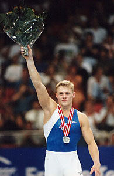

Aleksei Bondarenko (KAZ/RUS)
1998 European AA Champion
1997 World AA Silver Medalist
2000 Olympic V Silver Medalist

Medal Total
Olympic Games: 1
Silver, 1 Bronze
World Championships: 3 Silver, 1 Bronze
European Championships: 2 Gold, 1 Silver, 4 Bronze
World Cup: 2 Silver
Alexei was born on August 23, 1978 in Kazakhstan. An ethnic Russian, he moved to that country in 1995 and trained at Dynamo Moscow.
Competition Results
1994
Jr. Asian Championships: 4th Team, 11th AA
1995
Atlanta Gymnastics Invitational (Pre-Olympics): 8th AA
Intl. Junior Championships: 2nd AA, 1st V, 3rd PH, 3rd PB, 4th R, 5th HB,
6th FX
Subway World Challenge: 3rd AA
1996
Jr. European Team Championships: 1st Team, 1st AA
RUS Championships: 6th AA
RUS Cup: 6th AA
1997
Blume Memorial: 1st AA
Chunichi Cup: 4th AA, 1st FX, 1st RG, 1st V, 1st PB
Cottbus International: 1st V, 2nd FX, 2nd PB, 2nd HB
RUS Cup: 1st AA, 1st R, 1st V, 1st PB
Swiss Cup: 2nd FX, 4th V
World Championships: 3rd Team, 2nd AA, 5th V
World Stars: 1st V, 1st PB, 1st HB, 3rd FX, 5th R
1998
American Cup: 2nd AA
DTB Cup: 1st PB, 4th FX, 5th V, 8th PH
European Championships: 1st AA, 1st PB, 2nd PH, 3rd
FX, 4th R
French International: 3rd AA
Swiss Cup: 2nd V, 3rd PB, 5th FX
World Cup: 2nd V, 6th FX, 6th R
1999
American Cup: 4th AA
Chunichi Cup: 2nd AA
Cottbus International: 1st V, 2nd FX, 2nd PB
DTB Cup: 3rd V, 3rd PB
Samboo Cup: 1st PB, 3rd R
Swiss Cup: 1st V, 4th PB
University Games: 2nd FX, 5th V
World Championships: 2nd Team, 10th AA, 2nd PB, 8th FX
2000
American Cup: 2nd AA
Copa Gimnastica: 1st AA, 2nd FX, 2nd PB, 3rd R, 4th PH, 4th V, 5th HB
DTB Cup: 2nd V, 4th R, 4th PB, 4th HB
European Championships: 4th AA, 3rd FX, 3rd PB, 7th PH
Gander Memorial: 1st AA
Olympic Games: 3rd Team, 7th AA, 2nd V
RCA Gymnastics Challenge: 1st AA
Russian Cup: 1st AA
Swiss Cup: 1st AA
Voralberg Gym Days: 1st AA
World Cup: 2nd PB, 7th V
World Stars: 2nd AA
2001
American Cup: 7th AA
DTB Cup: 5th FX, 5th V, 7th R
Gander Memorial: 5th AA
Goodwill Games: 7th AA, 3rd FX, 4th PB, 6th V, 7th R, 8th PH
RUS Championships: 1st AA
Swiss Cup: 9th AA
Voronin Cup: 2nd AA
World Championships: 7th Team, 18th AA, 4th V, 6th FX
World Stars: 1st HB
2002
DTB Cup: 4th HB, 6th V
European Championships: 3rd AA, 5th V
Glasgow Grand Prix: 1st HB
Greek International: 1st AA
RUS Championships: 2nd AA
RUS Cup: 4th AA, 2nd R
Voronin Cup: 1st AA
2003
Chunichi Cup: 4th AA
French International: 3rd HB, 4th PB
Greek International: 5th HB, 8th PB
RUS Championships: 6th AA, 2nd R
RUS Cup: 2nd AA
Voronin Cup: 1st AA, 1st FX, 1st PB
World Championships: 4th Team, 11th AA
2004
Olympic Games: 6th Team, 13th AA, 8th V
RUS Championships: 1st AA
This page was created on August
12, 2005.
© Gymn Forum